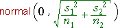
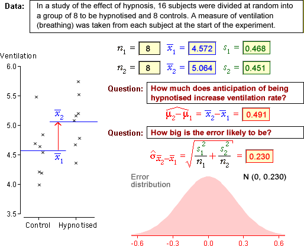

| is a point estimate of µ2 - µ1 |
Estimating difference between population means
In most situations where data are collected from two groups, the most important questions relate to the difference between the population means in the groups. Since the population means are usually unknown, the sample means are used to estimate them,
| is a point estimate of µ2 - µ1 |
Standard error
As in other estimation situations,  is a point estimate of µ2 - µ1 and is unlikely to be exactly equal to the population difference. In order to
properly interpret its value, we must understand the distribution of the estimation
error. From the results on the previous page,
is a point estimate of µ2 - µ1 and is unlikely to be exactly equal to the population difference. In order to
properly interpret its value, we must understand the distribution of the estimation
error. From the results on the previous page,

Unfortunately the population standard deviations in the two groups are also unknown, so this result cannot be directly used. However they can be replaced by the sample standard deviations to obtain an estimate of the error distribution,

This distribution gives a reasonable indication of size of the likely errors and its standard deviation is the standard error of the estimator.
Examples
The diagram below shows the point estimate of the difference between the means of two groups for a few data sets. The estimated distribution of the estimation error is also displayed in pink.

In each case, the error distribution gives a reasonable idea of the accuracy of the point estimate.